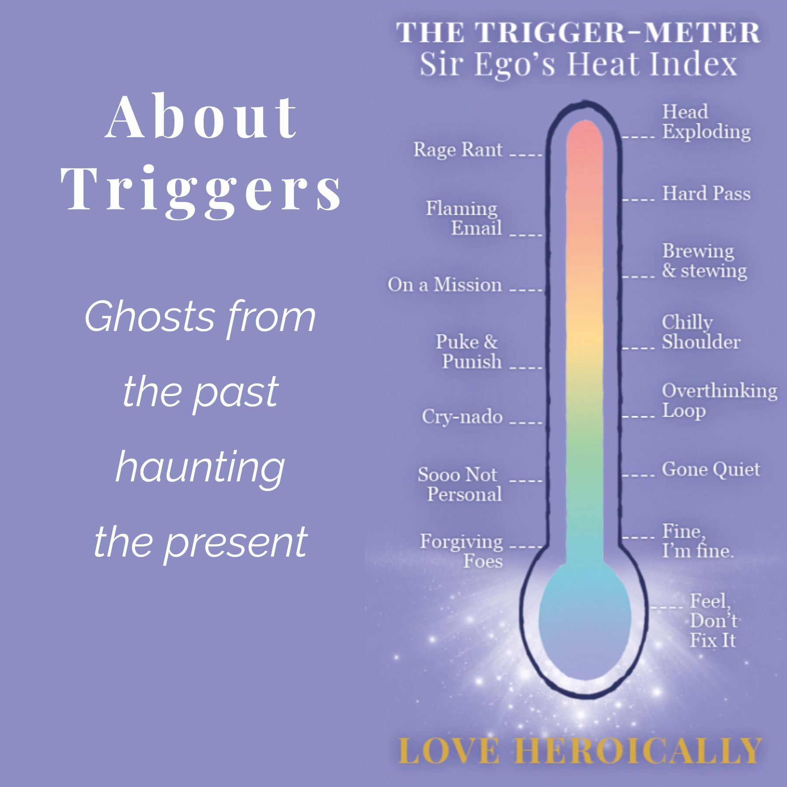

Kindred Lights
Kindred Lights
Triggers are ghosts from the past that hijack the present. Here is how we reclaim our sanity.
Every minute of every day, energy is passing through you.
Light hitting the eye and becoming what you see. Sound waves reaching the ear and becoming a voice you recognize. Touch. Temperature. The hum of the refrigerator. Wifi, radio waves, electromagnetic frequencies, dog whistles, x-rays — most of it at frequencies your body has no receiver for. All of it moving through you, around you, past you, at every moment of your life.
When you are at ease, this energy just flows. You receive what you can receive and the rest passes by. You are present. Things are okay.
Until something happens that you cannot let pass.
Sometimes something happens that the body cannot stay open to. The heart clamps down. The breath shortens. The moment freezes.
It can be terrifying — a betrayal, an accident, a loss, a violation, a cruelty. The body slams the door against the experience because the experience is more than the system can metabolize in the moment it is happening.
But it can also be something so beautiful that we never want it to end. The look in your beloved's eyes the first time you both knew. The hour you held your newborn. The sunset on the cliff. The taste of the thing you had never tasted before. The body grabs at it. Holds on. Tries to make the moment stay.
In the framework's language: something Sir Ego's Script must have or must not have. The mechanism is identical in both directions. The fear-clamp and the love-clamp are the same clamp. Both freeze the moment. Both stop the flow.
And the energy that was passing through gets stuck.
Energy in nature never stops moving. It either flows or it spins. When the moment is clamped down on, the energy that was passing through has nowhere to go — so it begins to spin in place. A holding pattern in the body. A tornado.
And the tornado holds everything. Every detail of the moment that closed it down. The words that were said. The faces in the room. The sights, the sounds, the smells. What you were wearing. The angle of the light. The taste of what was in your mouth. The temperature. The exact pitch of the voice that broke something open or shut something down. All of it stored in a single spinning vortex of energy that the body refused to let pass.
This is what is happening underneath what most people call memory. Not the kind of memory you retrieve on purpose. The kind that retrieves you.

The Three Things That Happen When a Tornado Opens
A tornado does not stay hidden forever. Eventually, something in the present moment resonates with what is stored — a voice that sounds like the voice that broke you, a smell that matches the smell of the room where it happened, a tone in your partner's text that the body recognizes from somewhere it does not consciously remember.
And the vortex begins to open. The petals unfurl. The energy that has been spinning starts to rise.
You are suddenly flooded. Not with the present moment — with the moment that was stored. The body is back there. The mind is back there. The heart is closed against something that is not actually happening in the room.
This is what we mean by being triggered. A ghost from the past hijacking the present.
And the body has three options for what to do with the rising energy.
Suppress it. Express it. Or let it rise and release.
Suppress. The mind goes immediately into fix-it thinking. How do I shut this down. What do I tell myself so I do not have to feel this. I will not let them see me cry. I will figure this out tomorrow. I will get back at them later. The energy gets shoved back into storage. The tornado does not dissipate — it grows. Every unreleased trigger adds to the next one. The fuse gets shorter. The tornado gets bigger.
Express. The energy comes out — the yell, the slammed door, the email you cannot unsend, the drink, the substance, the spending, the affair, the cruel sentence you actually said out loud. Momentary relief. Lasting damage. The expression spreads the bad vibes into the people and things around you, forms a habit of expressing, and creates new tornados in everyone it touches — including the next one in you, because what you just did is something you knew better than.
Release. The third option, the one nobody taught you. You let the energy rise. You feel what was being suppressed without acting on the fix-it thinking it generates. The heart stays open. The breath stays steady. The body lets the tornado release. The energy goes — completely, permanently. That specific stored thing never gets to hijack you again.

Two Paths Through the Same Trigger
The first two are what almost everyone does. The third is what this whole site is teaching.
Releasing is not pleasant. The energy was stored in the first place because the body could not bear to feel it in the moment it happened. The same intensity comes up when it releases — sometimes more. But it is the energy moving out, not the wound recurring. Different mechanism. Different result.
If you have ever wondered why meditation and witnessing and journaling and therapy and willpower have not been enough — why you still get hijacked, why the same trigger keeps detonating — this is why. Those practices are wonderful and they are not the release step. Feeling the energy rise without acting on it is the release step. It is a distinct skill. It can be learned. It is the practice the Five Steps operationalize.
If you're inside a tornado right now and could use a guided five-minute walk through it — the free Trigger Decoder will take your actual situation and surface what's underneath. No email, no gate, no signup.
Try the Trigger Decoder →Disrespect. Abandonment. Rejection. Betrayal. Disempowerment. Humiliation. Invisibility. Jealousy. Greed. Inadequacy. Shame. Each of us has our own stockpile, in our own combinations, calibrated by everything that has ever happened to us.
And the love-clamps too. The relationship you keep trying to recreate. The version of yourself you keep trying to get back to. The high. The hit. The moment that ended too soon and that you have been quietly auditioning replacements for ever since.
Each unreleased trigger gets bigger with every detonation. And — this is the part most people miss — each tornado magnetizes situations to itself. The unreleased energy is asking to be released. So life, helpfully or unhelpfully depending on how you read it, keeps presenting you with situations shaped exactly like the tornado you are carrying. The abandonment story keeps finding people who will abandon you. The not-enough story keeps finding rooms where you are made to feel not enough. This is not bad luck. This is the divine plan doing its job, trying to bring you back to the centered, cleared, Y-axis state of the Wise One.
You are not being punished. You are being given another chance to release what wants to leave.
Every time you have done something you knew better than — every time you said the thing you wish you hadn't said, sent the email, took the drink, made the deal, hurt the person, abandoned the value, betrayed the relationship — somewhere in that moment a tornado opened and you acted from the stored energy instead of from the present moment.
This is when the end justifies the means. This is when normally honest people lie. This is when normally kind people are cruel. This is when the addiction comes back, the affair starts, the rage explodes, the deal gets cut that should not have been cut, the parent says the thing to the child that the child will store for forty years.
Sir Ego is not a bad person. He is a desperate one, holding tornados he does not know how to put down.
Once you see the mechanism, the strange thing is not that humans do terrible things to each other. The strange thing is that we ever expected anything else. We are operating in a world full of tornados that nobody taught us how to feel through.
Every problem you have ever had — at the energetic level — traces here. Different vocabularies have named it: samskara, vasana, vasanas, the storehouse of impressions, the body keeps the score, the closed heart, the wound, the trigger, the loop. The mechanism is the same.
I learned this from the custody battle that almost cost me my children.
After my third DUI, I lost everything in three months — my children, my house, my car, my reputation, my freedom. I spent three months in jail, four months in rehab, and the next two years fighting to regain custody of my twin daughters through a family court process that I had walked into assuming the truth would matter.
The truth did not matter. What mattered was what people felt when they were in the room with me.
My ex-husband, who had spent fifteen years perfecting the art of making me look like the unstable one, was running a campaign of fabricated allegations through his attorney. Every accusation was a lie. Every hearing extended my supervised visits another five weeks. I was complying meticulously with every court order, working a demanding job in early sobriety, walking into every appointment beyond reproach — and watching the court rule against me again, and again, and again.
I was furious. Not loudly. I knew better than that. I was furious in a way that lived in my chest, in my voice, in my posture, in the way I held a pen during a deposition. CPTSD from fifteen years of being undermined by a person whose presence triggered every unreleased thing in my body. The trauma was constant, and so was the triggering. Every court date detonated a tornado of stored energy that I had to suppress in real time while the lawyer who was supposed to be protecting my children took my money and refused my calls.
I assumed I was hiding it. I was not. A counselor finally told me what every social worker, attorney, judge, and probation officer in the case had already felt: you exude the energy of a victim. You are vibrating with rage and grievance. Everyone in the room feels it before you open your mouth. And every one of them is reading it as confirmation of what he has been saying about you.
The stored energy was costing me my children.
I could not out-argue it. I could not out-comply it. I could not out-document it. He could be guilty in fact, and I could still be losing the case in the room, because what the room felt was not the facts. What the room felt was the tornado.
That was the moment I went on the spiritual path in earnest. Not as an interest. Not as a hobby. As an operational necessity. I had to learn to feel the rising energy without suppressing it, without expressing it, without acting on the fix-it thinking it generated — in real time, in a courtroom, with my children's futures depending on whether I could do it.
I learned, mostly. Not perfectly. But enough.
It took two years to regain shared custody. Several more years to release enough stored energy that the relationship could change. Today he comes to Thanksgiving. He makes the gravy. He is family. Our daughters are thriving adults. None of that was possible while I was holding the tornados.
The mechanism on this page is not theoretical to me. I learned it because I had to. Every word has been stress-tested under conditions where doing it wrong had real consequences. Your stored energy is doing something in your life, somewhere, that is costing you something you may not yet fully see. That is what triggers do. That is why this page exists.
The mechanism on this page is the why. The Five Steps to Freedom are the how — the practice that takes you down the Wise One path in real time, one trigger at a time.

The Five Steps to Freedom
Five steps. One practice. The structural answer to why we hijack ourselves — and the way back.
The mechanics on this page are not new. The teaching of stored energy releasing through the open heart traces through Patanjali's Yoga Sutras (the second sutra defines yoga as the neutralization of these energy vortices, called samskaras), through Paramahansa Yogananda's teachings on the storehouse of impressions, and into modern prose through Michael Singer's The Untethered Soul, which articulates the mechanism beautifully for a contemporary reader. Trauma-informed practitioners have arrived at adjacent ground from a different direction; Bessel van der Kolk's The Body Keeps the Score documents how unreleased experience is stored in the body itself. The closed-heart and physiological-coherence material is grounded in the peer-reviewed research of the HeartMath Institute, where Kindred Lights holds Resilient Heart certification.
The framework's contribution is the integration: naming Sir Ego as the agent of the clamp-down, naming the love-clamp and the fear-clamp as the same mechanism, and routing the release into a five-step practice that can be walked in the middle of a trigger by anyone who needs it.